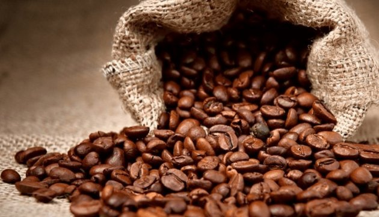

История кофе
Кофе как напиток ценится с древних времен. Таких древних, что никто уже точно не скажет, когда и как именно люди догадались перемалывать его зерна и добавлять их в кипящую воду. Этой самой воды уже много утекло с тех пор, и теперь любопытные ученые пытаются восстановить в памяти человечества исторические факты.
История кофе, как утверждают одни, началась в странах Ближнего Востока, но найдутся и такие историки, которые будут отстаивать другие точки зрения.
Как видите, история возникновения кофе весьма неоднозначна. Мы расскажем Вам о самых распространенных версиях того, с чего все начиналось.
Также интересна история появления кофе в разных странах Европы, Америки и других континентов. Этот напиток так полюбили во всем мире, что сейчас кофейные плантации существуют почти везде, где это позволяют климат, почва и другие природные факторы. Во многих странах появились свои традиции, связанные с кофе, и свои способы приготовления напитка.
Есть свои традиции и в России. История кофе в России развивалась благодаря Петру I. К напитку поначалу относились настороженно, как и ко всему новому, все же со временем он отвоевал свое место под солнцем.
А вот история растворимого кофе гораздо ближе к сегодняшнему дню, и на его популярность очень повлияла Вторая мировая война. Сегодня растворимый кофе даже популярнее, чем кофе в зернах, а все из-за простоты приготовления – ритмы современной жизни как будто не оставляют выбора и заставляют пить то, что можно сделать быстро, буквально на ходу. Однако ценители все же предпочитают кофе в зернах.
История развития кофе продолжается даже сейчас – изучаются его свойства, появляются новые виды и способы употребления кофе.
День кофе

17 апреля отмечают во всем мире Международный День кофе. Самими большими любителями этого напитка поистине считаются европейцы. Наряду с таким праздником в Италии отмечают еще и День эспрессо. В такой день во всех кофейнях и кафе, а также в ресторанах и барах готовят только самые лучшее сорта кофе, не забывают они и провести акции для посетителей. Но откуда День кофе пришел к нам, кто первый испробовал столь дивный напиток, аромат которого очень долго держится в воздухе. А может это вовсе был не напиток, а что-то еще. Давайте немного углубимся в историю и узнаем, кто стал прародителей кофе.
История открытия этого чудного напитка, окутана легендой, согласно которой эфиопский пастух Калди, заметил, что его козы, наевшись листьев кофейного дерева, стали вести себя слишком возбужденно безо всякой очевидной причины. Старик рассказал наставнику монастыря и тот решил проверить свойства зерен на себе. Почувствовав на себе бодрость и заряд энергии, он приказал всем наставникам монастыря употреблять зерна во время ночных проповедей.
850 г.н.э. стал годом открытия напитка, но популярность кофе во всем мире пришла на много позже. Изначально использовались свежие ягоды кофейного дерева, с веками технология совершенствовалась. Арабские племена, позаимствовавшие употребление кофе у эфиопов размельчали зерна, добавляли животный жир и смешивали с козьим молоком. Из массы, которую получали, делали шарики и употребляли в дороге. Животный жир скреплял размельченные зерна и молоко в единую массу.
В 13 веке рецепт приготовления кофе изменился до более узнаваемого и современного вида. Зерна высушивали, обжаривали, измельчали в порошок и заливали кипятком. Арабы добавляли в кофе молоко и пряности, корицу, имбирь. Напиток постепенно завоевывал Азию. Он был настолько популярным, что его стали продавать! Первый кофейный магазин датирован 1475 годом и открыт он был в Константинополе, назывался он Кива Хан. А следом стали открываться кофейни, где каждый мог выпить чашечку горячего кофе. Гонения на любителей кофейного напитка начались в начале 16 века, коррумпированный губернатор Мекки, объявил кофейный напиток вне закона, считая кофеманов угрозой для правителя! Султану пожаловались жители, и он отменил запрет, и казнил губернатора! Попытка запретить употребление кофе не увенчалась успехом и стоила жизни чиновнику.
Знакомство Европы с заморским бодрящим и ароматным напитком происходит в конце 17 столетия в Вене и связано с украинским купцом Юрием - Франц Кульчицким. Фактически Юрий Кульчицкий стал первым прообразом современного рекламного агента, лично пропагандируя кофе по улицам Вены переодевшись в турецкие костюмы. А в 1684 году украинец открывает одну из первых кофейных лавок в Вене. Усовершенствовав рецепт употребления напитка, он добавлял молоко и сахар, так стал называться "кофе по-венски". А через некоторое время армянин Паскаль открыл собственную кофейню в Париже - "Le caf Procope". С этого времени Европа навсегда связала себя узами с кофейным напитком.
О кофе слагали стихи, писали пьесы и посвящали музыку. Иоганн Себастьян Бах, будучи влюбленным в напиток, написал "Кофейную кантату". В России верили в целебные свойства напитка. Его использовали как лекарство от мигрени. А в 1703 году была открыта первая в России кофейная лавка. Царица Екатерина употребляла кофе в огромном количестве, а кофейную гущу использовала в косметических целях.
Кофеманы со всего мира объединяются в группы. Открывают кофейни и боготворят напиток, подаривший им новые впечатление вкуса и ощущение приятного аромата.
А женщины? А что женщины? Они упорно вели свою собственную борьбу с кофейным напитком в Англии. Это привело к тому, что в 1674 году на свет появилась так называемая " Петиция женщин против кофе". Это был настоящий женский бунт против популярного напитка! А все потому, что их мужья на длительное время пропадали в кофейнях Лондона. Из-за чего рушились целые семьи. Да, было и такое! Практически каждый современный уважающий себя кофеман знает имя швейцарского химика Макса Моргенталлера. Именно он создал растворимый кофе - популярный напиток в каждой российской семье.
Но на этом история чудного напитка не заканчивается. В 1903 году немец Людвиг Роземус, плывший из Европы в Америку, попал в шторм. Морская вода попала в трюм и намочила мешки с ценным грузом. Этим грузом являлись зерна кофе. Груз отсырел, но Людвиг решил отдать зерна на экспертизу, результатом которой стало заявление, что кофе утратило полностью кофеин. Предприимчивость Людвига поставила точку в этом деле. Так был изобретен кофе без кофеина.
Сегодня на прилавках кофейных магазинов вы можете увидеть множество сортов зерен, там же можно заказать услугу для перемалывания выбранного товара и здесь же приобрести необходимые элементы для кофейной церемонии, и почему бы не устроить праздник кофе у себя дома, позвав в гости, самых близких вам людей. Окунитесь с ними в историю, которую узнали сегодня у нас и насладитесь чудесным напитком.
На главную